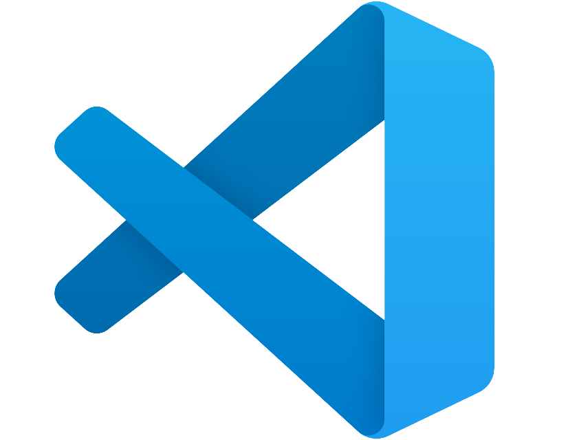

FLUTTER
Мобильная разработка
Dart представляет язык программирования общего назначения от компании Google, который предназначен прежде всего для разработки прикладных приложений.
В своем развитии Dart испытал влияние более ранних языков, таких как Smalltak, Java, JavaScript. Его синтаксис похож на синтаксис других си-подобных языков. При этом Dart - объектно-ориентированный язык.
Особенности и преимущества
- Кроссплатформенность;
- Высокая производительность;
- Приятный и понятный UI;
- Активное сообщество разработчиков;
- Богатая библиотека виджетов.
Недостатки
- Ограниченный доступ к некоторым нативным модулям;
- Может не подойти для сложных приложений;
- Размер приложения.
Среда разработки
VS Code является наиболее популярной интегрированной средой разработки, используемой для разработки приложений на Flutter разработчиками во всем мире. Он любим разработчиками благодаря своей простоте. Благодаря обширному расширению рынка он обеспечивает надежную поддержку разработки приложений.

Кроссплатформенный редактор кода, доступный на Windows, Linux и MacOS. Поддерживает язык Dart, не требует много ресурсов компьютера, потому что не является полноценной IDE.
Android Studio является официальной IDE для разработки приложений Android, а также поддерживает разработку приложений Flutter. Android Studio разработала богатый набор плагинов, которые помогают разработчикам экономить время разработки при качественной разработке приложений. Среда упрощает процесс разработки, позволяя разработчикам проектировать, отлаживать и развертывать приложения.